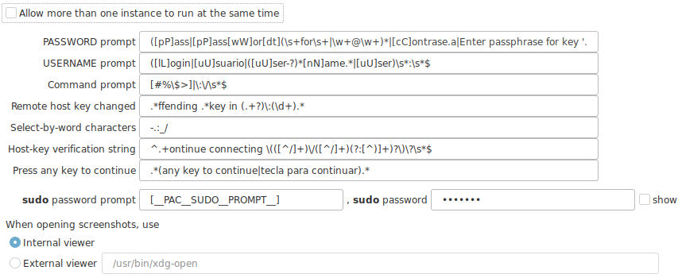

Advanced Options

Customize to your language
Some of this options might need to be customized to work with your language, or more detections might be needed for multiple languages.
- PASSWORD prompt : Regular expression to identify your terminal password prompt.
- USERNAME prompt : Regular expression to identify your terminal username prompt.
- Command prompt : Regular expression to identify your terminal prompt.
- Remote host key changed : Regular expression to identify when a message of a conflicting known host was sent by the terminal.
- Select by work characters : List of characters that identify a "word". This is used when double clicking on the terminal. The selection will expand as long as any of the listed characters appears next to the doubleclick location. Important, this is "not" a regular expression, is a simple list of characters
- Host key verification string : Regular expression to identify when a message of a new known host was sent by the terminal.
- Press any key to continue : Regular expression to identify when a request to continue has been sent by the terminal.
- sudo password prompt : *pending
-
sudo password : *pending
-
When opening screenshots, use
- The internal viewer
- And external viewer. You must the the path and name of the application.